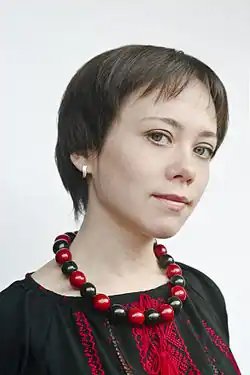
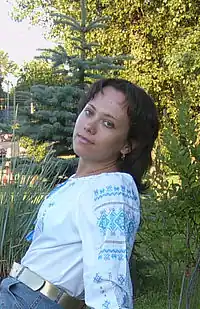

Народилася 24 березня 1981 року в м.Фастові Київської області. Дитячі роки пройшли в селищі Борова Фастівського району. З 1989 року – киянка. В 2004 році закінчила із відзнакою магістратуру Інституту філології Київського національного університету імені Тараса Шевченка (спеціальність: українська мова та література). Працювала редактором телекомпанії "ЮАна", автором та ведучою телепередачі "Гармонія душі", старшим редактором Всесвітньої служби радіомовлення України, референтом з питань українознавства КУН, Секретарем Ради Національної Спілки письменників України по роботі з молодими авторами, головним редактором часопису "Гранословіє".
2006-2008 рр. — Голова Всеукраїнської Ліги українських жінок.
З 2004 року — член Національної спілки письменників України. З 2010 – член Асоціації Українських Письменників. Авторка поетичних книжок "Суцвіття слів" (Київ, 2000) , "Поміж бузкових снів" (Київ, 2002), "Між богами і нами" (Київ, 2005), "Мандрівка линвою" (2008, Львів-Радом, "Каменяр", двомовне видання у співавторстві з польським письменником Войчехом Песткою), "Інші лінії" (Київ, ВЦ "Просвіта", 2009); роману "Етимологія крові" (Київ, "ФАКТ", 2008), низки оповідань та драматичних творів, опублікованих в антологіях, альманахах та літературних часописах. Твори перекладалися польською, російською, англійською, французькою, болгарською, македонською, азербайджанською та литовською мовами. В Польщі та Азербайджані виходили окремі збірки поезій. Перекладає з польської, болгарської та македонської мов (поезію, прозу, драматургію). Автор лібретто до першого українського оригінального мюзиклу "Глорія" (прем’єрна постановка: 8 березня 2010, Донецький національний академічний український музично-драматичний театр). Лауреат літературних Інтернет-конкурсів "Поетичні майстерні" та "Рукомесло" у номінаціях "поезія" та "драматургія". Лауреат Літературного конкурсу СФУЖО ім. Марусі Бек (Канада) за оповідання "Зелений борщ" (2009 р.) За роман "Етимологія крові" була нагороджена Міжнародною україно-німецькою премією ім. О. Гончара, здобула перемогу на конкурсі романів, кіносценаріїв та п’єс "Коронація слова — 2008" (ІІІ місце) та на конкурсі видавництва "Смолоскип" (ІІ місце). 2009 року на Міжнародному фестивалі поезії "Слов’янські обійми" (Варна, Болгарія) отримала нагороду "Срібне перо" за переклади віршів Елисавети Багряної на українську мову (книга "Двете Багряни във Вечната и святата").